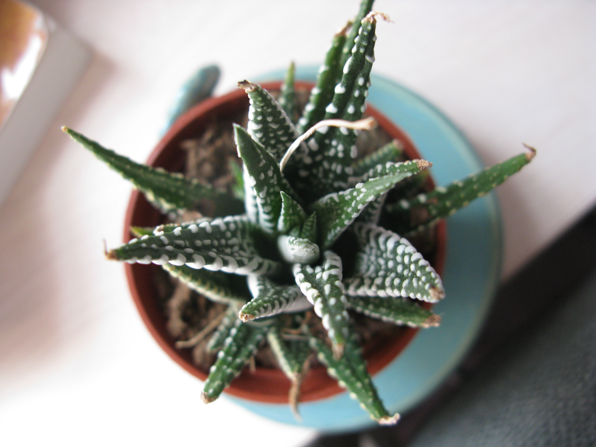
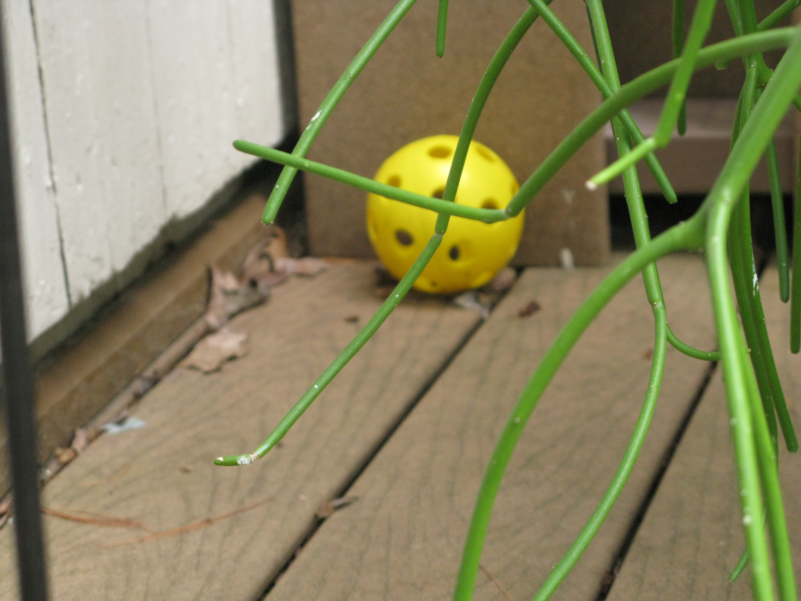

From A to Z: The Website of Ariel Zweig

Plants on da windowsill! So aesthetic
My parents and I in Jerusalem, winter break 2016-17.

From left to right: Mother, Sister, Father

❮
❯
This yellow ball symbolizes innocence.